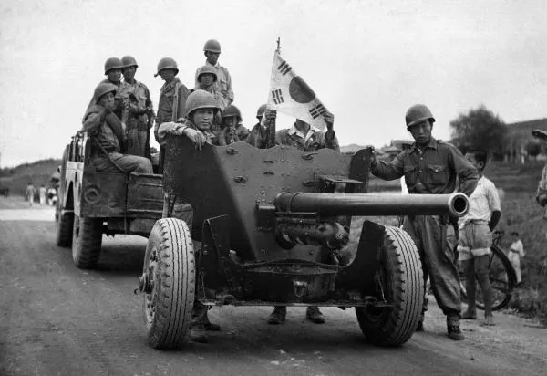
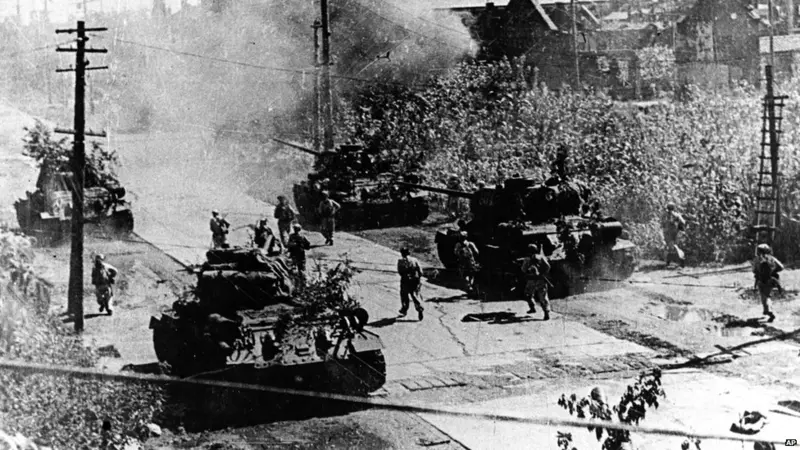
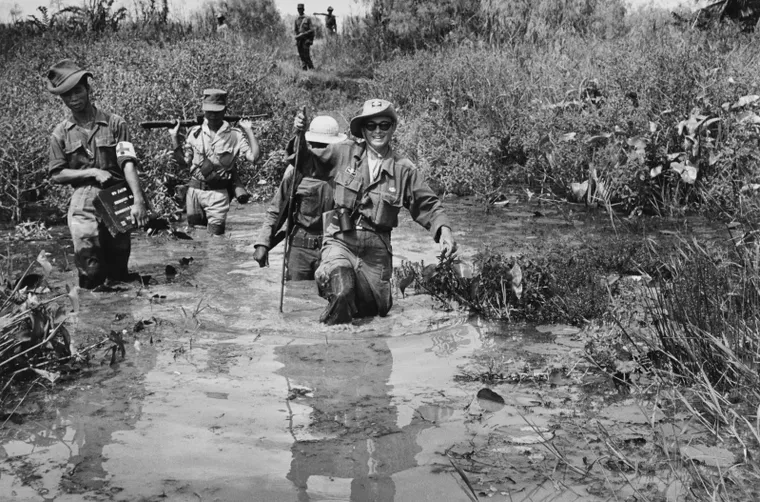
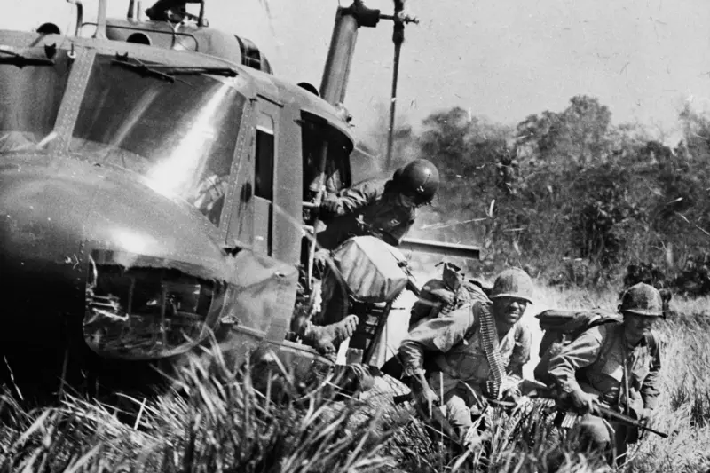
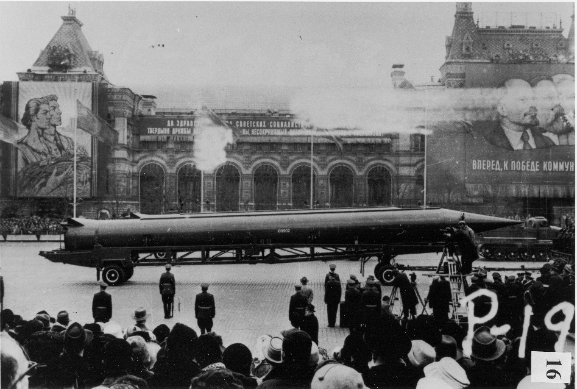
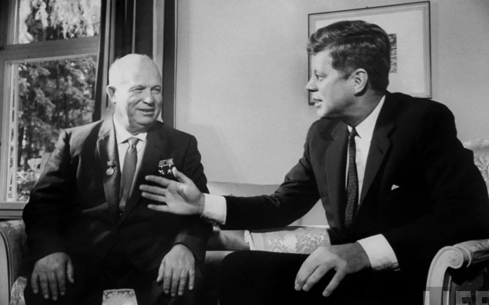

Conflitos Indiretos
Guerra da Coreia (1950–1953)
A península coreana foi dividida após a Segunda Guerra Mundial entre o Norte comunista, apoiado pela União Soviética e pela China, e o Sul capitalista, aliado dos Estados Unidos e seus aliados ocidentais. Em 1950, a Coreia do Norte invadiu a Coreia do Sul com o objetivo de reunificar o país sob o regime comunista. Os Estados Unidos, liderando uma coalizão da ONU, intervieram militarmente para defender o Sul, enquanto a China enviou tropas para apoiar o Norte. A guerra foi marcada por combates violentos, revezes territoriais e pesadas baixas civis e militares. Em 1953, foi assinado um armistício que estabeleceu a divisão da península praticamente na linha do paralelo 38, criando uma zona desmilitarizada (DMZ) que separa os dois países até hoje. O conflito nunca teve um tratado de paz formal, deixando a Coreia dividida e em tensão constante.
 Guerra do Vietnã (1955–1975)
Após a derrota dos franceses na Indochina, o Vietnã foi dividido em Norte e Sul. O Vietnã do Norte era um estado comunista apoiado pela União Soviética e China, enquanto o Vietnã do Sul era apoiado pelos Estados Unidos, que viam o conflito como parte da estratégia para conter o avanço do comunismo (Doutrina Truman e Teoria do Dominó). A guerra começou como um conflito interno, mas os EUA ampliaram sua participação a partir dos anos 60, enviando tropas e usando tecnologia militar avançada. O conflito foi marcado pelo uso intenso de guerrilha, bombardeios aéreos (incluindo o uso do agente laranja), e grande resistência das forças vietcongues do Norte. Apesar do enorme poder militar americano, a guerra tornou-se cada vez mais impopular nos EUA, com protestos em massa e críticas internas. Em 1973, os EUA retiraram suas tropas, e em 1975 o Vietnã do Norte conquistou o Sul, reunificando o país sob um governo comunista. A guerra teve consequências profundas na política mundial e na sociedade americana, além de deixar o Vietnã devastado.
 Crise dos Mísseis de Cuba (1962)
Durante a década de 1960, a União Soviética e os Estados Unidos disputavam o controle político e ideológico do mundo. Após a Revolução Cubana de 1959, Cuba se alinhou com a URSS, em resposta ao boicote norte-americano. Em outubro de 1962, aviões espiões americanos detectaram a construção de bases de mísseis soviéticos em Cuba, bem perto do território dos EUA. Os Estados Unidos reagiram impondo um bloqueio naval à ilha e exigindo a retirada dos mísseis. Após momentos tensos, o líder soviético Nikita Khrushchov concordou em retirar os mísseis em troca da promessa americana de não invadir Cuba e da remoção dos mísseis americanos da Turquia. Essa crise é considerada o ponto mais perigoso da Guerra Fria, com o mundo à beira de uma guerra nuclear.
 